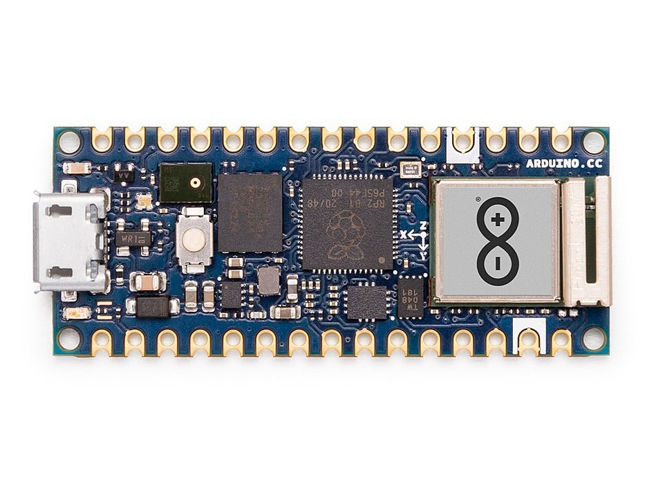

Arduino Nano RP2040 Connect¶
Cảnh báo
Board này không còn được hỗ trợ. Phiên bản firmware OpenMV cuối cùng cho Arduino Nano RP2040 Connect là 4.7.0. Sẽ không có thêm bản cập nhật firmware, sửa lỗi, hay tính năng mới nào cho thiết bị này. Thông tin bên dưới được giữ lại cho người dùng đang chạy phiên bản 4.7.0 hoặc cũ hơn.
Arduino Nano RP2040 Connect là bo mạch theo chuẩn Arduino Nano có kích thước 45 × 18 mm, được xây dựng xung quanh Raspberry Pi RP2040 — vi xử lý lõi kép ARM Cortex‑M0+ chạy ở 133 MHz với 264 KB SRAM nội bộ. Wi-Fi và BLE được cung cấp bởi module U‑blox NINA‑W102, và bo mạch tích hợp IMU 6 trục LSM6DSOX cùng microphone PDM MP34DT06. Firmware OpenMV điều khiển tất cả các thành phần này thông qua MicroPython.
{kind=link}

Để xem datasheet đầy đủ, ảnh chụp và kích thước, hãy truy cập trang sản phẩm Arduino Nano RP2040 Connect.
Điểm nổi bật¶
Raspberry Pi RP2040 lõi kép ARM Cortex‑M0+ ở 133 MHz với 264 KB SRAM nội bộ.
Flash QSPI ngoài 16 MB.
Module U‑blox NINA‑W102 cung cấp Wi‑Fi 2.4 GHz b/g/n và Bluetooth 4.2 (BR/EDR + LE).
IMU 6 trục LSM6DSOX và microphone PDM MP34DT06.
Cổng Micro USB để cấp nguồn, lập trình và REPL qua CDC.
22 chân I/O người dùng trên header Nano chuẩn —
TX/RX,D2–D13(số),A0–A7(analog).
Sơ đồ chân¶

Tham chiếu chân¶
Tên chân (pin) |
Tham chiếu |
Chức năng |
|---|---|---|
TX |
3.3 V |
UART0 TX / SPI0 RX / I2C0 SDA / PWM0 A |
RX |
3.3 V |
UART0 RX / SPI0 CS / I2C0 SCL / PWM0 B |
D2 |
3.3 V |
SPI1 CS / UART1 RX / I2C0 SCL / PWM4 B |
D3 |
3.3 V |
SPI1 TX / UART0 RTS / I2C1 SCL / PWM7 B |
D4 |
3.3 V |
SPI0 RX / UART0 TX / I2C0 SDA / PWM0 A |
D5 |
3.3 V |
SPI0 CS / UART0 RX / I2C0 SCL / PWM0 B |
D6 |
3.3 V |
SPI0 SCK / UART0 CTS / I2C1 SDA / PWM1 A |
D7 |
3.3 V |
SPI0 TX / UART0 RTS / I2C1 SCL / PWM1 B |
D8 |
3.3 V |
SPI0 RX / UART1 TX / I2C0 SDA / PWM2 A |
D9 |
3.3 V |
SPI0 CS / UART1 RX / I2C0 SCL / PWM2 B |
D10 |
3.3 V |
SPI0 CS / UART1 RX / I2C0 SCL / PWM2 B |
D11 |
3.3 V |
SPI0 TX / UART1 RTS / I2C1 SCL / PWM3 B |
D12 |
3.3 V |
SPI0 RX / UART1 TX / I2C0 SDA / PWM2 A |
D13 |
3.3 V |
SPI0 SCK / UART1 CTS / I2C1 SDA / PWM3 A |
D14 / A0 |
3.3 V |
ADC / SPI1 SCK / UART1 CTS / I2C1 SDA / PWM5 A |
D15 / A1 |
3.3 V |
ADC / SPI1 TX / UART1 RTS / I2C1 SCL / PWM5 B |
D16 / A2 |
3.3 V |
ADC / SPI1 RX / UART0 TX / I2C0 SDA / PWM6 A |
D17 / A3 |
3.3 V |
ADC / SPI1 CS / UART0 RX / I2C0 SCL / PWM6 B |
D18 / A4 / SDA |
3.3 V |
ADC / I2C0 SDA / SPI1 RX / UART0 TX / PWM6 A |
D19 / A5 / SCL |
3.3 V |
ADC / I2C0 SCL / SPI1 CS / UART0 RX / PWM6 B |
D20 / A6 |
3.3 V |
ADC / GPIO |
D21 / A7 |
3.3 V |
ADC / GPIO |
RESET |
3.3 V |
nhấn nút RESET trên bo mạch hoặc kéo xuống GND để đặt lại |
REC |
3.3 V |
BOOTSEL — kéo lên cao khi cấp nguồn để vào bootloader ROM RP2040 |
LED_BUILTIN |
— |
Đèn LED người dùng màu cam trên |
LED_RED |
— |
Kênh đỏ của RGB LED |
LED_GREEN |
— |
Kênh xanh lá của RGB LED |
LED_BLUE |
— |
Kênh xanh dương của RGB LED |
Cảnh báo
Các chân I/O của Nano RP2040 Connect chỉ hoạt động ở 3.3 V — chúng không chịu được 5 V. Đưa 5 V vào sẽ làm hỏng RP2040.
Các chân nguồn¶
VIN — ngõ vào 4 – 20 V. Cấp nguồn cho bo mạch thông qua bộ điều áp chuyển mạch tích hợp. Cũng được kết nối qua diode từ đường 5 V USB, vì vậy USB và
VINcó thể cùng lúc hiện diện mà không gây phản dòng.+5V — mặc định để hở (không kết nối).
+3V3 — ngõ ra bộ điều áp 3.3 V.
AREF — chân tham chiếu analog. Không kết nối với RP2040 trên bo mạch này — ADC luôn được tham chiếu ở 3.3 V.
GND — đất chung.
Nano RP2040 Connect có thể được cấp nguồn qua một trong hai đường:
Micro USB — cung cấp 5 V cho bộ điều áp tích hợp.
Chân VIN — cấp nguồn điện áp ổn định từ 4 – 20 V.
Ghi chú
Một cầu hàn trên mặt dưới bo mạch nối +5V với đường 5 V USB. Hàn cầu này để chân header +5V thực sự mang điện áp 5 V.
Ghi chú
Một cầu hàn thường đóng ở ngõ ra bộ điều áp chuyển mạch 4–20 V tích hợp có thể được cắt để vô hiệu hóa bộ điều áp, cho phép cấp nguồn trực tiếp từ nguồn 3.3 V bên ngoài vào +3V3.
Các chân khôi phục và gỡ lỗi¶
RESET — vừa là pad hàn lộ ra ngoài vừa là nút nhấn RESET tạm thời trên mặt trên bo mạch, kết nối với đường NRST của RP2040. Kéo xuống GND hoặc nhấn nút để đặt lại.
REC — pad hàn lộ ra ngoài. Giữ
REClên cao khi cấp nguồn (hoặc trong khi nhấn RESET) đưa RP2040 vào bootloader ROM; bo mạch sẽ liệt kê lại qua USB dưới dạng ổ lưu trữ USB có tênRPI-RP2và chấp nhận file firmware định dạng.uf2.
Nano RP2040 Connect sử dụng cơ chế nhấn RESET hai lần liên tiếp của Arduino để vào bootloader của Arduino. Nhấn nhanh nút RESET hai lần — bo mạch sẽ liệt kê lại qua USB dưới dạng thiết bị UF2 và OpenMV IDE có thể nạp firmware mới.
Các tín hiệu SWD của RP2040 được lộ ra trên các pad phủ thiếc ở mặt sau bo mạch, ngay bên dưới module NINA. Tất cả tín hiệu gỡ lỗi đều tham chiếu 3.3 V.
Ngoại vi tích hợp¶
Đèn LED¶
Nano RP2040 Connect có một RGB LED người dùng — được điều khiển qua các kênh in lụa LED_RED, LED_GREEN, và LED_BLUE — cùng một LED_BUILTIN màu cam riêng trên D13. Cả bốn đèn đều có thể điều khiển bằng phần mềm thông qua machine.LED
from machine import LED
LED("LED_RED").on()
LED("LED_GREEN").on()
LED("LED_BLUE").on()
LED("LED_BUILTIN").on()
Một đèn LED nguồn màu xanh lá riêng biệt trên bo mạch sẽ sáng khi đường +3.3 V đang hoạt động và không thể điều khiển bằng người dùng.
Cảm biến camera¶
Firmware OpenMV trên Nano RP2040 Connect hỗ trợ cảm biến CMOS song song OmniVision OV7670. Bo mạch không có cảm biến hình ảnh tích hợp — kết nối module OV7670 với các chân header in lụa liệt kê bên dưới và điều khiển nó thông qua module csi --- cảm biến camera
import csi
cam = csi.CSI()
cam.reset()
cam.pixformat(csi.RGB565)
cam.framesize(csi.QVGA)
cam.snapshot(time=2000) # let auto‑exposure settle
while True:
img = cam.snapshot()
Ghi chú
OV7670 cần 14 chân. Firmware kết nối chúng như sau:
Tín hiệu cảm biến |
Chân Nano RP2040 |
|---|---|
D0 |
|
D1 |
|
D2 |
|
D3 |
|
D4 |
|
D5 |
|
D6 |
|
D7 |
|
HSYNC |
|
VSYNC |
|
PXCLK |
|
MXCLK |
|
POWER |
|
RESET |
|
SCL |
|
SDA |
|
Bus điều khiển I²C của OV7670 được chia sẻ với IMU tích hợp và ATECC608A trên I²C 0. Cảm biến chiếm địa chỉ 7-bit 0x21 — các thiết bị người dùng trên bus 0 cũng phải tránh địa chỉ này khi camera đã kết nối.
IMU¶
Gia tốc kế + con quay hồi chuyển 6 trục LSM6DSOX tích hợp nằm trên I2C0. Cổng rp2 mặc định machine.I2C(0) sử dụng bộ chân khác, vì vậy cần truyền rõ ràng các pad in lụa SDA/SCL. Sử dụng driver đóng gói sẵn lsm6dsox.LSM6DSOX
import time
from machine import I2C, Pin
from lsm6dsox import LSM6DSOX
bus = I2C(0, scl=Pin("SCL"), sda=Pin("SDA"))
imu = LSM6DSOX(bus)
while True:
print(imu.accel()) # (x, y, z) in g
print(imu.gyro()) # (x, y, z) in deg/s
time.sleep_ms(100)
Microphone¶
Microphone PDM MP34DT06 tích hợp được thu thập qua audio --- Mô-đun Âm thanh sử dụng một trong các khối PIO của RP2040:
import audio
from ulab import numpy as np
def loudness(pcmbuf):
samples = np.array(np.frombuffer(pcmbuf, dtype=np.int16), dtype=np.float)
rms = np.sqrt(np.mean(samples ** 2))
if rms > 10000:
print("Loud!", int(rms))
audio.init(channels=1, frequency=16000, gain_db=24)
audio.start_streaming(loudness)
while True:
pass
Wi‑Fi¶
Module NINA‑W102 tích hợp được hiển thị qua network --- cấu hình mạng dưới dạng giao diện station:
import network, time
wlan = network.WLAN(network.STA_IF)
wlan.active(True)
wlan.connect("ssid", "password")
while not wlan.isconnected():
time.sleep(1)
print("Wi‑Fi IP:", wlan.ipconfig("addr4")[0])
Bluetooth¶
Cùng module NINA cũng hỗ trợ Bluetooth 4.2 LE. Sử dụng aioble --- Async BLE để dùng BLE theo phong cách asyncio — ví dụ, quảng bá dưới dạng thiết bị ngoại vi và chờ trung tâm kết nối:
import asyncio
import aioble
async def run():
while True:
conn = await aioble.advertise(250_000, name="Nano-RP2040")
print("Connected:", conn.device)
await conn.disconnected()
asyncio.run(run())
Tham chiếu bus¶
GPIO¶
Dùng machine.Pin để đọc hoặc điều khiển bất kỳ chân in lụa nào. Ngõ ra là CMOS 3.3 V, tổng dòng sink 50 mA trên tất cả GPIO.
from machine import Pin
out = Pin("D2", Pin.OUT)
out.on()
out.off()
out.value(1)
inp = Pin("D3", Pin.IN, Pin.PULL_UP)
print(inp.value())
Bất kỳ chân ngõ vào nào cũng có thể kích hoạt ngắt theo sườn chuyển đổi:
def handler(pin):
print("triggered:", pin)
Pin("D3", Pin.IN, Pin.PULL_UP).irq(
handler, Pin.IRQ_FALLING | Pin.IRQ_RISING,
)
UART¶
Bus |
TX |
RX |
|---|---|---|
UART0 |
TX |
RX |
Dùng tên in lụa TX/RX với machine.UART
from machine import UART
uart = UART(0, baudrate=115200)
uart.write("hello")
uart.read(5)
Ghi chú
machine.UART(1) tồn tại nhưng được dành riêng cho module NINA‑W102 tích hợp (liên kết BLE); đừng sử dụng trực tiếp.
I²C¶
Bus |
SDA |
SCL |
|---|---|---|
I2C0 |
|
|
I2C1 |
|
|
Cả hai bus đều cần truyền rõ ràng các chân khi khởi tạo machine.I2C
from machine import I2C, Pin
bus0 = I2C(0, scl=Pin("SCL"), sda=Pin("SDA"), freq=400_000)
bus0.scan()
bus1 = I2C(1, scl=Pin("A1"), sda=Pin("A0"), freq=400_000)
bus1.scan()
Ghi chú
Hai chip trên bo mạch chia sẻ bus 0 — thiết bị người dùng trên bus này phải tránh các địa chỉ của chúng:
0x6A— IMU LSM6DSOX0x60— ATECC608A‑MAHDA‑T
Sử dụng A0/A1 cho I²C sẽ chiếm chúng cho bus đó, nên không thể đồng thời dùng chúng làm ngõ vào ADC.
Ghi chú
Các pad SDA / SCL (bus 0) có điện trở kéo lên tích hợp về 3.3 V, nên không cần điện trở kéo ngoài cho các thiết bị trên bus đó. A0 / A1 (bus 1) thì không — hãy thêm điện trở kéo ngoài khi sử dụng bus 1.
Phần cứng tương tự cũng có thể được dùng ở chế độ target (slave) thông qua machine.I2CTarget để hiển thị một vùng bộ nhớ cho bộ điều khiển I²C khác:
from machine import I2CTarget
buf = bytearray(32)
target = I2CTarget(0, addr=0x42, mem=buf)
SPI¶
Bus |
MOSI |
MISO |
SCK |
CS |
|---|---|---|---|---|
SPI0 |
D11 |
D12 |
D13 |
D10 |
Cổng rp2 không cấu hình sẵn các chân của SPI0 trên bo mạch này, vì vậy cần truyền rõ ràng các pad in lụa khi tạo bus:
from machine import SPI, Pin
spi = SPI(0, baudrate=10_000_000,
sck=Pin("D13"), mosi=Pin("D11"), miso=Pin("D12"))
cs = Pin("D10", Pin.OUT, value=1) # CS is not driven by the SPI peripheral
cs.value(0)
spi.write(b"hello")
cs.value(1)
Ghi chú
D13 cũng là LED_BUILTIN màu cam — khi điều khiển SPI trên bus này, đèn LED sẽ nhấp nháy theo nhịp đồng hồ bus.
Ghi chú
machine.SPI(1) tồn tại nhưng được dành riêng cho module NINA‑W102 tích hợp (liên kết SPI Wi-Fi/BLE); đừng sử dụng trực tiếp.
ADC¶
RP2040 có bốn kênh ADC 12‑bit được hiển thị trên A0–A3, tất cả tham chiếu 3.3 V — read_u16 trả về 0–65535 tương ứng với 0–3.3 V tại chân. Chân AREF của bo mạch không được kết nối, nên tham chiếu luôn là 3.3 V:
from machine import ADC
import time
adc = ADC("A0")
while True:
voltage = adc.read_u16() * 3.3 / 65535
print(voltage)
time.sleep_ms(100)
PWM¶
Chân (pin) |
Slice / channel |
|---|---|
TX |
PWM0 A |
RX |
PWM0 B |
D2 |
PWM4 B |
D3 |
PWM7 B |
D4 |
PWM0 A |
D5 |
PWM0 B |
D6 |
PWM1 A |
D7 |
PWM1 B |
D8 |
PWM2 A |
D9 |
PWM2 B |
D10 |
PWM2 B |
D11 |
PWM3 B |
D12 |
PWM2 A |
D13 |
PWM3 A |
D14 / A0 |
PWM5 A |
D15 / A1 |
PWM5 B |
D16 / A2 |
PWM6 A |
D17 / A3 |
PWM6 B |
D18 / A4 / SDA |
PWM6 A |
D19 / A5 / SCL |
PWM6 B |
Điều khiển bất kỳ chân nào trong số đó qua machine.PWM
from machine import Pin, PWM
pwm = PWM(Pin("D3"), freq=1_000, duty_u16=32768)
Ghi chú
Một số chân chia sẻ kênh slice PWM:
PWM0 A nằm trên
TXvàD4.PWM0 B nằm trên
RXvàD5.PWM2 A nằm trên
D8vàD12.PWM2 B nằm trên
D9vàD10.PWM6 A nằm trên
D16/A2vàD18/A4/SDA.PWM6 B nằm trên
D17/A3vàD19/A5/SCL.
Chỉ chọn một thiết bị dùng cho mỗi kênh slice. Kênh A và B trong cùng một slice chia sẻ chu kỳ (tần số) nhưng mỗi kênh có chu kỳ nhiệm vụ riêng.
Bus phần mềm mô phỏng bit‑banged¶
machine.SoftI2C và machine.SoftSPI hoạt động trên bất kỳ GPIO nào nếu bạn cần thêm bus.
Cảm biến nhiệt (kết nối ngoài)¶
Firmware bao gồm driver fir --- trình điều khiển cảm biến nhiệt (fir == hồng ngoại xa) cho bộ ảnh nhiệt AMG8833 8×8 kết nối ngoài. Kết nối module với bus I²C liệt kê bên dưới, rồi đọc khung hình bằng fir.init() + fir.snapshot()
import time
import image
import fir
fir.init() # auto‑detects the sensor
clock = time.clock()
while True:
clock.tick()
try:
img = fir.snapshot(x_scale=5, y_scale=5,
color_palette=image.PALETTE_IRONBOW,
hint=image.BICUBIC,
copy_to_fb=True)
except OSError:
continue
print(clock.fps())
Driver fir chỉ giao tiếp với cảm biến qua I²C 0 — kết nối module với các pad in lụa SCL / SDA. Địa chỉ 7-bit của cảm biến (0x69) không được dùng bởi bất kỳ thiết bị nào khác trên bus đó.
Thời gian¶
time¶
Module time cung cấp các hàm trì hoãn blocking, đếm ticks đơn điệu và đo thời gian đã trôi qua:
import time
time.sleep(1) # seconds
time.sleep_ms(500)
time.sleep_us(10)
start = time.ticks_ms()
# ...do work...
elapsed = time.ticks_diff(time.ticks_ms(), start)
Bộ định thời ảo¶
machine.Timer lên lịch các hàm gọi lại định kỳ hoặc một lần mà không tiêu tốn slot bộ định thời phần cứng. Truyền -1 làm id để sử dụng bộ định thời ảo (phần mềm):
from machine import Timer
one_shot = Timer(-1)
one_shot.init(period=5_000, mode=Timer.ONE_SHOT,
callback=lambda t: print("once"))
periodic = Timer(-1)
periodic.init(period=2_000, mode=Timer.PERIODIC,
callback=lambda t: print("tick"))
Giá trị chu kỳ tính bằng mili giây. Gọi deinit() để dừng và giải phóng slot.
Đồng hồ thời gian thực¶
machine.RTC giữ thời gian thực qua các lần đặt lại. RTC của RP2040 gắn với bộ dao động trên chip và không tồn tại qua mất điện hoàn toàn — hãy đặt thời gian ở mỗi lần khởi động lạnh nếu điều này quan trọng với ứng dụng của bạn:
from machine import RTC
rtc = RTC()
rtc.datetime((2026, 4, 30, 4, 12, 0, 0, 0)) # Y, M, D, weekday, h, m, s, subsec
print(rtc.datetime())
Watchdog¶
machine.WDT đặt lại bo mạch nếu ứng dụng bị treo. Một khi đã khởi động thì không thể dừng hoặc cấu hình lại — hãy nuôi nó định kỳ bên trong vòng lặp chính của bạn:
from machine import WDT
wdt = WDT(timeout=5_000) # 5 second window
while True:
# ...do work...
wdt.feed()
Thông tin khởi động và runtime¶
Cập nhật firmware (UF2)¶
Nano RP2040 Connect sử dụng cơ chế nhấn RESET hai lần liên tiếp của Arduino để vào bootloader của Arduino. Nhấn nhanh nút reset hai lần — bo mạch sẽ liệt kê lại qua USB dưới dạng thiết bị UF2 và OpenMV IDE có thể nạp firmware mới.
Một tập lệnh đang chạy có thể quay lại bootloader theo yêu cầu bằng cách gọi machine.bootloader()
import machine
machine.bootloader()
Hệ thống tệp và thứ tự khởi động¶
Firmware Nano RP2040 Connect gắn kết một hệ thống tệp duy nhất khi khởi động:
Flash nội bộ — luôn được gắn kết tại
/flashvà dùng làm thư mục làm việc. Chứamain.pyvàREADME.txttheo mặc định; được tạo ra ở lần khởi động đầu tiên.
Sau khi gắn kết, trình thông dịch sẽ chạy các tập lệnh từ /flash:
boot.pyđược thực thi ở mỗi lần soft reset.main.pyđược thực thi chỉ khi khởi động lạnh, ngay sauboot.py.
File main.py mặc định được cài sẵn trên bo mạch vừa nạp firmware chỉ nhấp nháy kênh xanh dương của RGB LED người dùng như nhịp tim (hai xung ngắn, khoảng ngừng ngắn), để bạn biết firmware đã khởi động thành công mà không cần kết nối host.
Khi kết nối qua USB, /flash sẽ liệt kê dưới dạng ổ lưu trữ USB trên host, cho phép bạn chỉnh sửa boot.py, main.py và bất kỳ tệp nào khác trực tiếp. Hãy eject ổ đĩa trước khi đặt lại bo mạch để host đẩy hết các bản ghi đã cache.
Ghi chú
Vì hệ điều hành coi ổ đĩa là thiết bị khối thụ động, các tệp được tạo hoặc sửa đổi bởi code chạy trên camera sẽ không hiển thị cho đến khi host gắn lại ổ đĩa. Nếu cả hệ điều hành lẫn camera cùng ghi vào hệ thống tệp đồng thời, hệ điều hành sẽ thắng và ghi đè thay đổi của camera. Dùng thẻ SD cho bất kỳ dữ liệu nào mà tập lệnh ghi lại, và gắn lại trước khi đọc các tệp đó từ host.
Ghi chú
Kênh đỏ của RGB LED người dùng có thể sáng ngắn trong khi host đang đọc hoặc ghi vào ổ lưu trữ USB — đây là chỉ báo hoạt động do firmware điều khiển, không phải lỗi.
Dung lượng lưu trữ¶
Nano RP2040 Connect xuất xưởng với:
/flash— hệ thống tệp FAT 14 MB, đọc/ghi.
Build Nano RP2040 không bao gồm ROMFS; đặt các module Python và mô hình (ML) trực tiếp trên /flash.
Thư viện phần mềm¶
Xem danh sách thư viện để biết danh sách đầy đủ các module — bao gồm những module dành riêng cho build Nano RP2040 Connect.